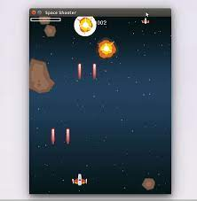

I created "Alien Hunter: Code Red," a fast-paced shooter game using Python. You face waves of aliens and need to survive as long as possible.
Use the arrow keys to move and the spacebar to shoot. Collect power-ups to upgrade your weapons and battle through different terrains. Compete on leaderboards for high scores and earn bonuses for combos.
The game features retro-style graphics and an energetic soundtrack to enhance your experience. Download "Alien Hunter: Code Red" now and save Earth from the alien menace!